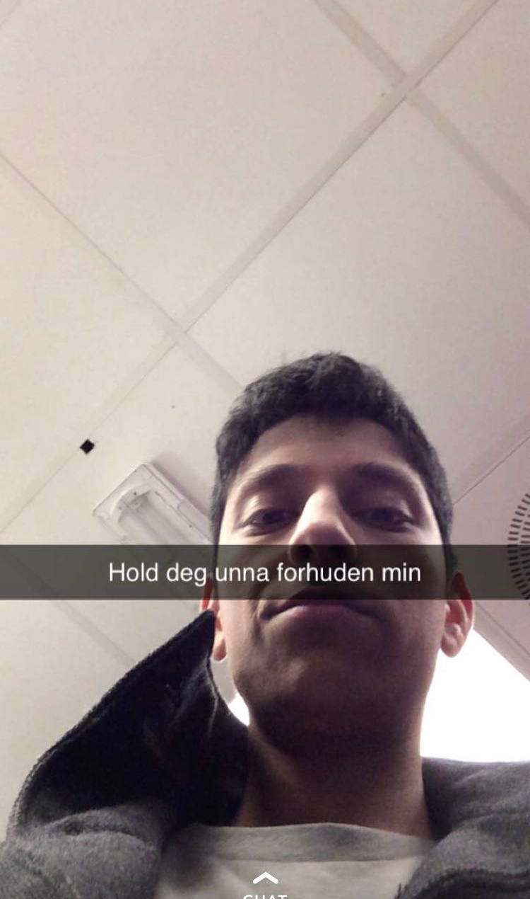

Zedan Hussain

Zedan "Butt" Hussain er muligens Norges største dyr. Dyriskheten hans måles til enhver tid med to sifre. Et av dyrets største svakheter er menn, han har derimot problemer med å komme ut av skapet. Selv om dyret sliter med sin seksualitet, har han en veldig sterk side. Dyret kan nemlig lære seg nesten alt. Dermed er det ganske positivt og omgås dette dyret, fordi det kan hjelpe med det meste. Dette dyret holdt på å begå selvmord som 4 åring, da han prøvde og hoppe ned fra andre etasje med en plastpose som fallskjerm. Dermed kan vi konkludere med at hans praktiske ferdigheter og kunnskap er nærmere null.
Generell informasjon:
- Alder : 17
- Høyde : 1.75m
- Vekt : 65kg
- Hårfarge : Svart
- Sivilstatus : Ubrukelig (Jonas Bø)
- Først observert : 20. August 2012
- Mental styrke : Sterk
- Styrker : Kan seriøst lære seg alt
- Svakheter : Menn
- Jobb : CEO av AZ Foto & IT
- Naturlig habitat : Bjerke
- Skalering av dyriskhet : 10